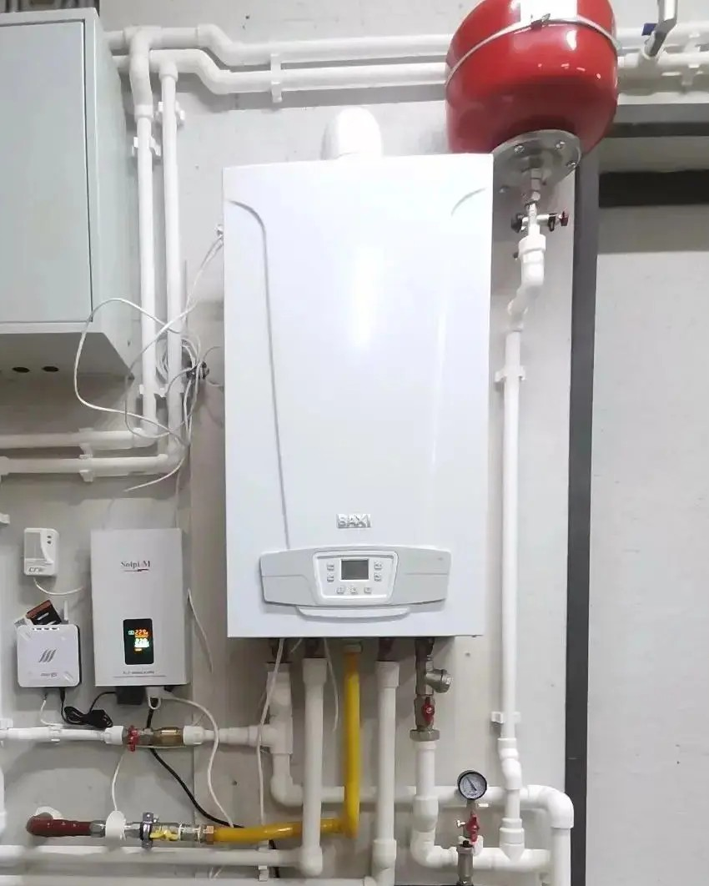

Запуск газовых котлов в частном доме: первый пуск и пусконаладка
Приезжаем после подключения газа, за один визит проверяем, запускаем и настраиваем котёл, оставляем акт для гарантии производителя. Разрешение на первый пуск у нас есть.

Запуск газового котла в частном доме - это первый пуск и пусконаладка: проверяем обвязку, дымоход, давление газа и воды, электрику и заземление, настраиваем мощность и автоматику. Первый пуск газового котла - от 7 000 руб. и 2-3 часа на месте, пусконаладка всей системы - от 18 000 руб. и один рабочий день. Приезжаем после того, как газ подключён, обычно в течение 1-2 дней после заявки.
Запуск газового котла - это не «нажать кнопку». Это ввод оборудования в эксплуатацию: инженер убеждается, что котёл, газ, дымоход, вода и электричество в вашем доме подходят друг другу, запускает его, настраивает и оформляет бумаги, по которым потом работает гарантия производителя. У компании есть разрешение на такие работы, поэтому первый пуск газового котла в частном доме мы выполняем сами, без посредников.
Порядок простой. Сначала газораспределительная организация подключает дом и пускает газ - это её зона, мы в неё не вмешиваемся. Затем приезжает наш инженер с опрессовочным насосом и приборами. Если котельную смонтировали не мы, начинаем с осмотра и опрессовки: запуск на системе с явными ошибками монтажа мы не делаем, а замечания записываем в акт.
Кто что делает на пути от трубы до тёплого дома
Чтобы ничего не потерялось между подрядчиками, мы разделяем этапы по исполнителям. Ниже - обычная схема для дома, который газифицируется впервые.
| Этап | Кто выполняет | Что входит |
|---|---|---|
| Подключение дома к сети, пуск газа | Газораспределительная организация | Проверка проекта и монтажа, акт, пломбировка счётчика, подача газа |
| Монтаж котельной и обвязки | Мы или другая монтажная организация | Котёл, дымоход, трубы, насосы, автоматика |
| Первый пуск и пусконаладка котла | Мы | Проверки, заполнение, пуск, настройка, акт и отметка в талоне |
| Ежегодное техническое обслуживание газового котла | Мы, специалист с допуском | Чистка, проверка, настройка, отметка в паспорте |
Что проверяем при первом пуске по шагам
Список ниже - наш рабочий порядок. Конкретные цифры для вашего котла берём из его паспорта: у каждой модели они свои.
- Документы и комплектность. Паспорт и гарантийный талон котла. Для магистрального газа ещё проект газоснабжения и акт о пуске газа, для газгольдера они не нужны. Без этого не стартуем.
- Газ. Осматриваем краны и соединения у котла, проверяем герметичность, замеряем давление газа на входе в покое и при работающем котле. Течь газа - повод остановиться и вызвать газовую службу.
- Дымоход и подача воздуха. Целостность, герметичность стыков, уклоны, соответствие длин и сечений требованиям производителя, тяга. Для закрытых камер - правильность коаксиала или раздельных труб.
- Вода. Заполняем систему постепенно, чтобы не оставить воздушные пробки в теплообменнике, стравливаем воздух из радиаторов и коллекторов. У настенных котлов в холодном состоянии давление обычно держат в пределах 0,7-1,5 бар (так указано в руководствах производителей), у вашей модели смотрим паспорт.
- Расширительный бак. Проверяем давление воздуха и объём: бак должен справляться с расширением всего теплоносителя в системе, а не только в котле.
- Теплоноситель. Если в системе вода, напоминаем требования производителя к ней: обычно это жёсткость не выше 2 мг-экв/л и pH 6,5-8,5, накипь гарантией не покрывается. Если антифриз - сверяем марку с допустимыми для котла.
- Электрика. Отдельная розетка или линия с заземлением, автомат, при плохой сети - стабилизатор или источник бесперебойного питания, если это требует производитель.
- Пуск и настройка. Запускаем на отопление и горячую воду, выставляем мощность, температуры, насос, подключаем комнатные термостаты и датчик наружной температуры для погодозависимого режима.
- Обучение и фотоотчёт. Показываем владельцу управление, что делать при ошибках и аварийных кодах, фиксируем на фото манометры, шильдик, параметры настройки.
Какие документы остаются у вас на руках
Главная причина, по которой первый пуск нельзя доверять случайному человеку, - гарантия. В руководствах производителей прямо сказано: гарантия действует только при вводе оборудования в эксплуатацию специализированной организацией, имеющей допуски на эти работы, и теряется при отсутствии документов о первом пуске. Срок гарантии считается с даты ввода в эксплуатацию, а далее в талоне нужны отметки о техническом обслуживании. У других производителей условия свои, поэтому до заказа сверьте талон: в некоторых из них первый пуск разрешён только фирменному сервису. Мы не заявляем статус сервисного центра брендов и скажем об этом заранее, если ваш талон требует иного.
- акт первого пуска с датой, адресом, серийным номером и параметрами настройки;
- заполненная строка о первом пуске в гарантийном талоне (дата, организация, фамилия специалиста);
- протокол опрессовки системы, если она проводилась;
- лист настроек котла и автоматики, чтобы любой специалист мог восстановить параметры;
- фотоотчёт по этапам проверки.
Ежегодное техническое обслуживание газового котла
После первого пуска котёл нужно обслуживать раз в год: производители требуют этого в паспорте, а гарантия у многих производителей действует только при наличии отметки об обслуживании в талоне. Это делает наш специалист с допуском на техническое обслуживание газовых котлов.
Что входит в визит, по перечню из руководства производителя и нашей практике:
- очистка горелки и камеры сгорания, очистка теплообменника от нагара снаружи;
- проверка электрода розжига и датчика пламени, герметичности газового контура и прокладок;
- проверка тяги, дымохода и воздуховода на загрязнение и герметичность;
- замер давления газа и проверка настройки газового клапана;
- проверка давления в системе и в расширительном баке, при необходимости корректировка;
- проверка датчиков и автоматики безопасности, вентилятора, работы на всех режимах;
- настройка котла под сезон, отметка в паспорте и акт обслуживания.
| Котёл | Обслуживание, цена |
|---|---|
| Настенный газовый до 35 кВт | от 4 000 руб. |
| Настенный конденсационный | от 5 500 руб. |
| Напольный до 60 кВт | от 5 500 руб. |
Если при обслуживании найдена неисправность
Мы сообщим, что требует ремонта, запишем это в акт и подскажем, куда обратиться: в сервисный центр производителя или в газовую службу. Заменой узлов самого газового котла мы не занимаемся и ничего не обещаем сверх того, что делаем. Зато вы получите точное описание проблемы и фото, с которыми разговор с сервисом проходит быстрее.
Когда нужна газовая служба
Мы работаем в паре с газовой службой, а не вместо неё. Вызывать её нужно в таких случаях:
- до нашего приезда: подключение дома, пуск газа, оформление договоров на поставку газа;
- при запахе газа: открыть окна, не включать свет и электроприборы, выйти из дома и позвонить по номеру 104 или 112 - любой пуск в этот момент исключён;
- при неисправностях газопровода, арматуры до котла и счётчика;
- если вы меняете котёл в доме, где газ уже подключён: порядок согласования уточните в своей газовой службе до заказа работ.
Опрессовка системы
Прежде чем наливать теплоноситель и включать котёл, систему нужно испытать давлением. Мы отсекаем котёл, расширительный бак и клапаны, не рассчитанные на пробное давление, поднимаем давление, выдерживаем и составляем акт. Опрессовка тёплого пола перед стяжкой избавляет от самой дорогой ошибки - вскрытия готового пола.
Подробности, режимы давления и цены - на странице Опрессовка системы отопления. От 6 000 руб.
Опрессовка системы отопления: цены и подробности от 6 000 руб.
Балансировка
Балансировка выравнивает расход теплоносителя по контурам тёплого пола и радиаторам. Без неё ближние комнаты перегреваются, дальние остаются холодными, а котёл часто включается и отключается. Мы настраиваем коллектор тёплого пола с расходомерами, клапаны радиаторов, скорость насосов и погодозависимую автоматику.
Методика, примеры и цены - на странице Балансировка системы отопления. От 300 руб. за радиатор и от 500 руб. за контур тёплого пола.
Балансировка и настройка: цены и подробности от 300 руб. за радиатор
Запуск отопления после монтажа и после лета
После монтажа порядок один: опрессовка, заполнение и удаление воздуха, пуск котла, затем балансировка. Тёплый пол прогреваем плавно, после того как стяжка набрала прочность. Если вы заказывали у нас монтаж, этот запуск входит в последний этап работ по договору и сдаётся актом.
После лета в доме, который уже отапливался, мы готовим систему к сезону: смотрим давление в контуре и в расширительном баке, стравливаем воздух, проверяем насосы, фильтры, коллекторы, состояние теплоносителя и автоматику, а заодно проводим ежегодное обслуживание самого газового котла. Одним визитом: меньше простоя и одна запись в паспорте.
Сколько стоит и сколько длится
Первый пуск газового котла - от 7 000 руб. Если в тот же визит нужна опрессовка, пакет обходится от 12 000 руб. Пусконаладка всей системы - от 18 000 руб. и один рабочий день. Каскад из двух котлов, сложная автоматика или много контуров считаем по смете, которую присылаем за 24 часа. Цены примерные: итог зависит от модели котла и схемы. Замер бесплатный до 100 км от КАД.
Рынок для сравнения: в Петербурге пуск и наладку газового котла сервисы ставят от 4 000 руб., мощные модели с дутьевой горелкой - до 9 000 руб., а монтаж котла с дымоходом и пуском целиком - около 12 000 руб. Наши цены лежат внутри этого диапазона, потому что мы делаем полную проверку с фотоотчётом, а не только включаем котёл.
Обновлено 07.10.2026
Цены на запуск и наладку
| Работа | Ед. | Цена |
|---|---|---|
| Первый пуск газового котла | шт | от 7 000 руб. |
| Пуск с опрессовкой системы | объект | от 12 000 руб. |
| Пусконаладка всей системы | объект | от 18 000 руб. |
| Техническое обслуживание настенного газового котла | визит | от 4 000 руб. |
| Настройка погодозависимой автоматики | комплект | от 5 000 руб. |
| Заполнение незамерзающим теплоносителем | объект | от 8 000 руб. |
Цены «от», итог - по смете после замера, не оферта. Обновлены 07.10.2026.
Что делаем на объекте - по часам
Заявка
Называете модель котла и что уже смонтировано, мы уточняем, подключён ли газ. Смета за 24 часа.
Проверка
Осматриваем обвязку, дымоход, электропитание, заземление, давление в системе. Около 30 минут.
Заполнение
Доводим давление, удаляем воздух из котла и контуров. От 30 до 60 минут.
Пуск и настройка
Запускаем, выставляем мощность, режимы отопления и горячей воды, автоматику. Около часа.
Акт и инструктаж
Оформляем акт первого пуска, заполняем талон, показываем управление. Около 20 минут.
Оборудование, с которым работаем
- Настенные и напольные газовые котлы
- Одноконтурные с бойлером и двухконтурные
- Каскады из двух котлов
Что подготовить к приезду инженера
- Система смонтирована полностью, есть доступ ко всем узлам
- Есть электропитание котла и насосов
- Газ подключён; для магистрального газа есть проект газоснабжения и акт о пуске газа, для газгольдера они не нужны
- Есть паспорт котла и документы на оборудование
- Воду для заправки системы (котловую или дистиллированную) привозим сами
Объекты, которые мы запускали
Площадь, материал стен, срок и бюджет по каждому дому. Точные адреса не публикуем.
Котельная и отопление дома 180 м² из газобетона, Юкки
Котельная с каскадом газовых котлов, дом 320 м², Токсово
Водяной тёплый пол во всём доме 210 м², Гатчинский район
Отопление без газа и разводка воды, дом 140 м², Сосново
Что мы фиксируем в договоре
Никаких «примерно» после подписания: цена, сроки и гарантия - на бумаге.
3 года на работы
Гарантия на монтаж прописана в договоре. На оборудование — гарантия производителя, помогаем с обращением.
Цена фиксируется в договоре
Итог по смете не растёт в процессе. Дополнительные работы — только по вашему письменному согласию.
Сроки фиксируются в договоре
График монтажа по этапам. За срыв срока по нашей вине — неустойка, указанная в договоре.
Вопросы и ответы
Кто имеет право делать первый пуск газового котла в частном доме?
Газ в дом пускает газораспределительная организация. Первый пуск самого котла и пусконаладку выполняет специализированная организация с допусками на эти работы: у нашей компании такое разрешение есть. Производители прямо требуют именно такого исполнителя для сохранения гарантии.
Сколько стоит первый пуск газового котла?
Первый пуск газового котла - от 7 000 руб., пакет с опрессовкой - от 12 000 руб. Цены примерные, точную сумму называем по смете за 24 часа после вашего звонка.
Сколько времени занимает запуск?
Сам пуск газового котла - 2-3 часа на месте. Пусконаладка всей системы с опрессовкой и настройкой автоматики занимает рабочий день, а балансировка тёплого пола с большим числом контуров может потребовать второго визита.
Что нужно подготовить к приезду инженера?
Газ должен быть подключён, у вас должны быть паспорт и талон котла, а для магистрального газа ещё проект газоснабжения и акт о пуске газа (для газгольдера они не нужны). Система смонтирована и доступна, рядом есть розетка с заземлением. Воду для заправки системы (котловую или дистиллированную) привозим сами.
Что будет с гарантией, если запустить котёл самостоятельно?
В руководствах производителей сказано, что без документов о первом пуске гарантия утрачивается. Технически котёл включается кнопкой, но без проверок и настройки он часто работает с короткими циклами и перерасходом газа.
Вы обслуживаете газовые котлы после пуска?
Да, ежегодное техническое обслуживание делает наш специалист с допуском: чистка, проверка тяги, давления газа и воды, автоматики безопасности, настройка и отметка в паспорте. Если находим неисправность, сообщаем, что требует ремонта, и подсказываем, куда обратиться: в сервисный центр производителя или в газовую службу.
Запустите систему, которую смонтировали другие?
Да. Сначала осмотр и опрессовка. Если находим ошибки монтажа, фиксируем их в акте и предлагаем исправить. Запускать систему с явными нарушениями мы не будем.
Смежные услуги
Инженерию дома выгоднее делать одним договором: общая котельная, один график и одна гарантия.
Перезвоните мне
Оставьте телефон - специалист перезвонит в течение 5 минут в рабочее время и согласует время выезда.